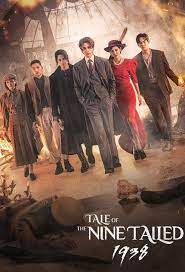
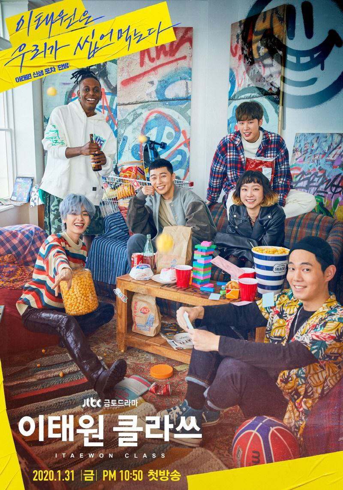

|
|
True Beauty |
| (2020-2021) |
Just finished True Beauty tonight (it's the first full show I've got through in a while without being distracted by other shows 😊) and I absolutely loved it. So happy with how it turned out. It's definitely going on my faves list and will no doubt be rewatched sometime.
|  | Ninetaled Fox |
| (2019-2020) |
This is one of those shows where the secondary characters shine so much you forget about the story of the main leads. This drama has a nice backstory and although it's quite typical and it has been repeated a lot in other dramas and movies, keeps you interested. I loved the funny moments and the most appealing thing for me was the story and relationship of the two brothers as well as the backstories of all the supporting cast, moving, deep and painful but very beautiful. Also, what an amazing, refreshing and shocking twist at the end! Didn't expect it and I loved it!!! Well done to the writers!
|  | Itaewon Class |
| (2019-2020) |
I had to add my review after I read a few awfully negative reviews of #ItaewonClass I decided to watch this show because I liked PSJ in What is a Wrong With Secretary Kim and I'm thrilled I did!! He was awesome in this series! He is a great actor! I loved the themes on this series, and most of all, the gutsy performance of Kim Da Mi. Her Yi-Seo is epic. She shines!! Finally! A woman who saves the day!!!! This is a great show! Watch it! And don't get distracted by those who think otherwise!!!